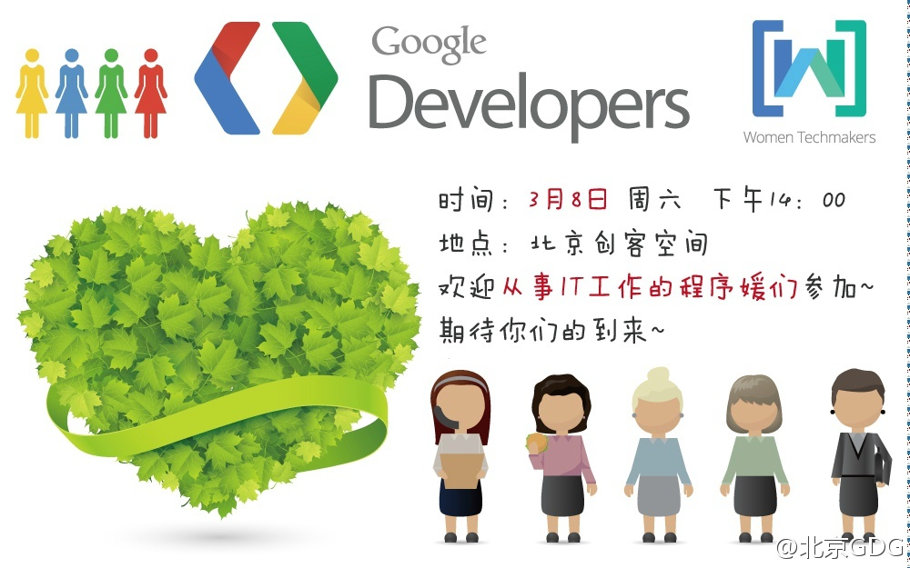

在数字上耍流氓是因为弱智，还是因为故意装糊涂？//@醒客:飞机比床安全？[挖鼻屎]，不统一标准的量化都是耍流氓，坐飞机累计才多长时间，床呢？ //@老沉: 你可能不知道：去年美国300多人溺死浴缸，400多人死于床上跌落 -- 保不齐有几例是谋杀！@徐军鹏:转发：224～这是2013年全球死于空难的人数。据美国联邦FAA数据显示：2013年3500万航班，运输30亿人次，庞大的数据只有224人死于空难，2013刷新纪录，成为史上最安全航空年。去年美国300多人溺死浴缸，400多人死于床上跌落。另去年中国民航死于空难的人数是0！飞机无疑是最安全的交通工具。
一定得去参加，并分享个话题。//@爱开源的好基友: @Ada李力@北京GDG:3月8日下午2点在北京创客空间，由谷歌开发者社区举办全球 Women Techmaker 北京站，邀请从事技术工作的女性均可，如程序媛、测试、设计师、项目主管等参加。同时我们也征集女讲师，欢迎大家把自己优秀的职场经验分享给大家，活动链接：网页链接，报名链接：网页链接 
回复@音速_越减越肥的胖子:已提交话题《女技术人员的部落》[呵呵] //@音速_越减越肥的胖子:ada姐，过来分享点内容，你的社区经验很丰富，可以激励下开发者。 //@Ada李力:一定得去参加，并分享个话题。 //@爱开源的好基友: @Ada李力@北京GDG:3月8日下午2点在北京创客空间，由谷歌开发者社区举办全球 Women Techmaker 北京站，邀请从事技术工作的女性均可，如程序媛、测试、设计师、项目主管等参加。同时我们也征集女讲师，欢迎大家把自己优秀的职场经验分享给大家，活动链接：网页链接，报名链接：网页链接
已灭绝的恐龙有着巨大的身躯和巨小的脑子。//@刘松--甲骨文: 更可怕的是意识看上去先进，但决策文化落后//@rechal_xue: 其实最主要还是决策层的意识落后，这不是显而易见的吗？@刘松--云时代:那些号称要向互联网转型的传统企业实际上刚刚开始经历接触社交媒体的“Grief Cycle” （痛苦周期）的前半段，真的考验还在后面，CEO轻松地说我们要转型，然后所有计划都淹没在唯唯诺诺的汇报机制，投机主义的中层经理，和被折腾够呛还要被扣绩效公司的苦逼员工上，千万别相信家长制能玩好互联网！
@蒋涛CSDN@陈雪频:我发表了《私人董事会助力企业一把手》一文之后，私人董事会迎来了一个爆发性的增长。但我有喜有忧，喜的是推动了这波潮流的兴起，忧的是很多机构打着私人董事会的旗号办活动，做的根本不是私人董事会。推荐我的文章：《拜托，别把私人董事会搞砸了》，来源自腾讯 · 大家 网页链接